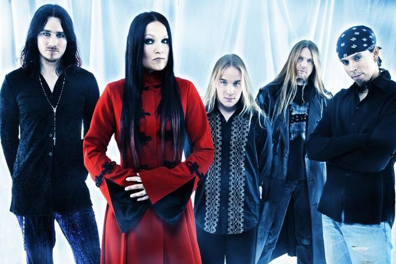

Nightwish — финская симфоник-метал-группа с женским вокалом, исполняющая песни преимущественно на английском языке. Основана Туомасом Холопайненом, Эмппу Вуориненом и Тарьей Турунен в 1996 году в городе Китеэ. Nightwish — одна из первых и самых влиятельных групп в жанре симфоник-метал, наряду с Therion и Within Temptation. Раннее творчество Nightwish отличалось сочетанием женского «оперного» вокала, клавишно-симфонической аранжировки и быстрых гитарных соло, характерных для пауэр-метала. В более поздних альбомах Nightwish отошли от пауэр-метала и «оперного» вокала, а роль симфонических аранжировок, наоборот, увеличилась. За свою историю Nightwish дважды меняли вокалистку: на смену Тарье Турунен в 2007 году пришла Анетт Ользон, а её в 2012 году сменила Флор Янсен (экс-After Forever). Бессменными членами группы остаются гитарист Эмппу Вуоринен и клавишник Туомас Холопайнен, последний — основной композитор Nightwish и автор большинства текстов. Поэзия Холопайнена в основном посвящена природе, сказкам, фантазиям и личным эмоциям.